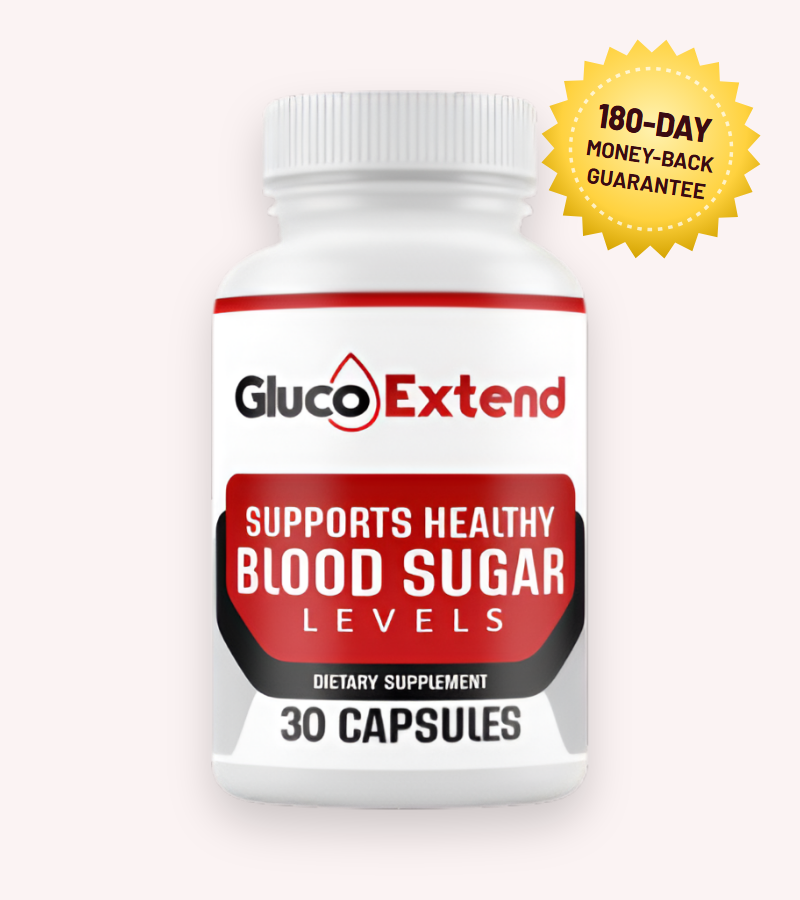
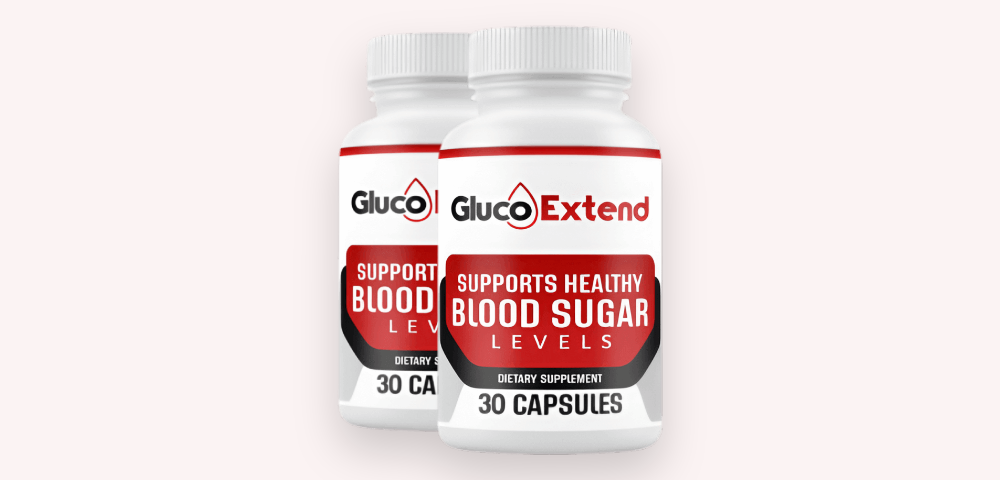

Glucose Uptake
Berberine activates AMPK, an energy sensor that helps muscles take up glucose and reduces sugar output from the liver.*
What's inside Gluco Extend, what berberine and gymnema can really do for blood sugar, and how to buy safely

Gluco Extend is a 30-capsule supplement sold to "support healthy blood sugar levels." Its order page names six ingredients — bean extract, berberine, cocoa, gymnema, a leaf extract and turmeric — out of "11+ ingredients and nutrients."
Berberine is one of the few supplements with solid human evidence for lowering blood sugar, which makes Gluco Extend more interesting than many products in this category — and also means it can interact with diabetes medicine. In this Gluco Extend review we cover the formula, the research, safety, the current discount packages and how to order from the official website.
The Gluco Extend supplement is a 30-capsule bottle with a red and white label reading "Supports Healthy Blood Sugar Levels." It's sold through a single order page and checked out through ClickBank. The page describes the formula as natural, non-GMO, gluten-free, stimulant-free and made in the USA.
According to the page, each capsule contains "a unique blend of 11+ ingredients and nutrients backed by clinical research." Six are named: bean extract, berberine, cocoa, gymnema, an unnamed leaf extract and turmeric. A "Dr. Recommended" badge features a physician assistant, Paul Donnelly, whose endorsement we couldn't verify.
There's no supplement facts label on the page. We also noticed it's built from the same template as other supplements from this seller network: it mentions "No Toothpaste or Mouthwash Involved," its guarantee text refers to "brain health," and its bonus images are named after a dental product.
Gluco Extend is a supplement, not a treatment for diabetes or prediabetes.
Berberine activates AMPK, an energy sensor that helps muscles take up glucose and reduces sugar output from the liver.*
Bean extract (white kidney bean) partly blocks starch digestion; gymnema may reduce sugar absorption and sweet cravings.*
Turmeric and cocoa flavanols support healthy inflammation and blood vessel function.*
These mechanisms are well described, and berberine in particular works through some of the same pathways as the diabetes drug metformin. The catch is the dose: berberine studies typically use 500 mg two or three times a day, while a single capsule holding six-plus ingredients is unlikely to contain anywhere near that.
The six Gluco Extend ingredients named on the official order page. Amounts per capsule are not disclosed.
| Ingredient | What it is | What the seller says |
|---|---|---|
| Bean extract | Likely white kidney bean (Phaseolus vulgaris) | Supports healthy blood sugar, metabolic function and energy |
| Berberine | Alkaloid from barberry and goldenseal (shown as berberine HCl) | Blood sugar support |
| Cocoa | Cocoa flavanols | Strong antioxidant support |
| Gymnema | Gymnema sylvestre leaf | Helps maintain healthy blood sugar levels |
| Leaf extract | Not specified | Helps maintain healthy blood sugar levels |
| Turmeric | Curcumin-containing root | Supports healthy digestion |
The page refers to a "proprietary blend of 11+ plants and nutrients" and a "blend of 4 plants and minerals"; the remaining ingredients are not named.
Berberine stands out as the one ingredient with strong human research for blood sugar. Gymnema and white kidney bean have smaller supporting studies; cocoa and turmeric are general health ingredients with limited blood sugar effects. The unnamed "leaf extract" could be anything from banaba to mulberry leaf.
Our take: the ingredient choices make sense, and berberine gives Gluco Extend more scientific backing than most blood sugar blends — but without doses we can't tell how much of it you'd actually get.
| Ingredient | Typical studied dose | Evidence for blood sugar |
|---|---|---|
| Berberine | 1,000–1,500 mg a day (divided) | Meta-analyses: fasting glucose and A1C lowered by roughly 0.5–0.7 points |
| Gymnema sylvestre | 400–600 mg extract | Small trials: modest reductions in fasting glucose and A1C |
| White kidney bean | 1,500–3,000 mg | Lower after-meal glucose; small weight loss |
| Cocoa flavanols | 500–900 mg flavanols | Small improvements in insulin sensitivity in some studies |
| Turmeric / curcumin | 500–1,500 mg curcumin | Mixed results; small effects in prediabetes trials |
Berberine's evidence is genuinely strong for a supplement: dozens of randomized trials show meaningful drops in blood sugar, sometimes comparable to metformin. But those studies use grams per day. A typical capsule holds 500 to 750 mg in total, shared here among 11-plus ingredients.
The page's "127,000 reviews" and short testimonials ("My blood sugar is stable") appear on other products from the same template and can't be verified.
Because berberine is the most important ingredient in Gluco Extend, it's worth understanding on its own.
Berberine is a bitter yellow compound found in plants such as barberry, goldenseal and Oregon grape. In people with type 2 diabetes or prediabetes it lowers fasting blood sugar, after-meal spikes and A1C, and it can modestly improve cholesterol and triglycerides.
Studies typically use 500 mg two or three times a day with meals, because berberine is poorly absorbed and short-acting. Taking it all at once makes stomach side effects more likely.
If berberine is the reason you're interested in Gluco Extend, a single-ingredient berberine supplement with a clear dose — discussed with your doctor — may give you more predictable results.
Possible benefits based on the named ingredients.*
Berberine and gymnema have human evidence for lowering glucose, at studied doses.*
White kidney bean extract partly blocks starch digestion.*
Cocoa flavanols and turmeric support blood vessel health.*
Gymnema can temporarily dull the taste of sweetness.*
Pair it with the basics that move blood sugar most: fewer refined carbs, more fiber and protein, walking after meals and good sleep.
Gluco Extend's named ingredients are well studied, but berberine is active enough that it should be treated with the same care as a mild medicine.
Gluco Extend has a better-than-average formula for a blood sugar supplement thanks to berberine, but the missing label leaves the most important question — how much berberine you get — unanswered. The reused sales page doesn't inspire confidence either.
If your doctor agrees, the 180-day guarantee makes Gluco Extend low-risk to try alongside diet changes. If you want berberine's effects specifically, a single-ingredient product with a stated dose is a more transparent choice.
Visit the Gluco Extend Official Website| Option | What it offers | Typical cost | Evidence |
|---|---|---|---|
| Gluco Extend | Undisclosed blend incl. berberine | $49–$79 a month | Ingredient-level only |
| Berberine (single ingredient) | 500 mg 2–3× daily, stated dose | $15–$30 a month | Strong for glucose and A1C |
| Walking after meals | Muscles absorb glucose | Free | Strong for after-meal spikes |
| Lower-carb, higher-fiber diet | Fewer, slower carbs | Grocery cost | Strong |
| Prescription medicines | Metformin, GLP-1s and others | Varies | Strongest |
Search for the Gluco Extend official website and you'll find the vendor's page alongside review sites and look-alikes. To get the genuine Gluco Extend supplement and the guarantee:
Each Gluco Extend bottle is a 30-day supply, covered by the 180-day money-back guarantee.
60-Day Supply
$79/bottle
No bonuses
180-Day Supply · Biggest Discount
$49/bottle
+ bonus guides
90-Day Supply
$69/bottle
+ bonus guides
Prices checked on the official order page on October 23, 2026 and may change. Bonuses: "Metabolic Reset System," "Natural Fat Loss Blueprint" and a VIP Health & Wellness Guide. US delivery 7–10 business days. One-time payment.
The Gluco Extend discount comes from the multi-bottle packages:
The "$1,074" and "$537" crossed-out totals are comparison prices rather than real past prices.
With a 180-day guarantee, even the 6-bottle package leaves time to judge results — but if you take diabetes medicine, get your doctor's go-ahead before stocking up.

Every Gluco Extend order from the official website comes with a 180-day money-back guarantee. The seller says you can write to them at any time within 180 days and return what you haven't used for a full refund.
ClickBank handles payment and refund requests; the vendor handles product questions.
Try Gluco Extend Risk-FreeGluco Extend is a dietary supplement sold for healthy blood sugar levels. Each bottle holds 30 capsules. The seller says it contains a proprietary blend of 11+ plants and nutrients and names bean extract, berberine, cocoa, gymnema, a leaf extract and turmeric.
There are no published studies on Gluco Extend itself. Berberine, one of its ingredients, lowered fasting blood sugar and A1C in many trials at about 1,000 to 1,500 mg a day, and gymnema has smaller supportive studies. Because the label and doses aren't published, it's impossible to know whether Gluco Extend provides those amounts.
The order page names bean extract, berberine, cocoa, gymnema, leaf extract and turmeric as part of a blend of 11+ ingredients. The remaining ingredients and all amounts are not shown on the sales page.
On the official website Gluco Extend costs $158 for 2 bottles ($79 each, plus shipping), $207 for 3 bottles ($69 each) and $294 for 6 bottles ($49 each). The 3- and 6-bottle packages ship free and include bonus guides.
The discount is built into the packages: the price falls from $79 to $69 per bottle for 3 bottles and $49 per bottle for 6 bottles, with free shipping and bonuses. We didn't find separate coupon codes on the official page.
Gluco Extend is sold through its own order page with checkout by ClickBank. Buying there gives you the 180-day money-back guarantee; look-alike sites and marketplace listings may not.
Ask your doctor first. Berberine and gymnema can lower blood sugar, so combining them with metformin, insulin or sulfonylureas may increase the risk of low blood sugar. Never stop or change prescribed medicine on your own.
Berberine commonly causes stomach upset, cramping, constipation or diarrhea, especially at first. Gymnema can lower blood sugar. Berberine also affects liver enzymes that process many drugs, and it should not be used during pregnancy or breastfeeding.
The seller says to take Gluco Extend with water. With 30 capsules described as a 30-day supply, that suggests one capsule a day; follow the directions on your bottle.
No. The order page says it is a one-time payment with no auto-ship or hidden charges.
Gluco Extend has a 180-day money-back guarantee. You can return what you haven't used within 180 days of purchase for a full refund.
No. Gluco Extend is a supplement, not a medicine. It isn't intended to diagnose, treat or cure diabetes. Keep taking prescribed medicine and checking your blood sugar as your doctor advises.
Get Gluco Extend for as little as $49 per bottle on the 6-bottle package with free shipping and bonus guides — covered by a 180-day money-back guarantee. Check with your doctor first if you take diabetes medicine.
Order Gluco Extend Now